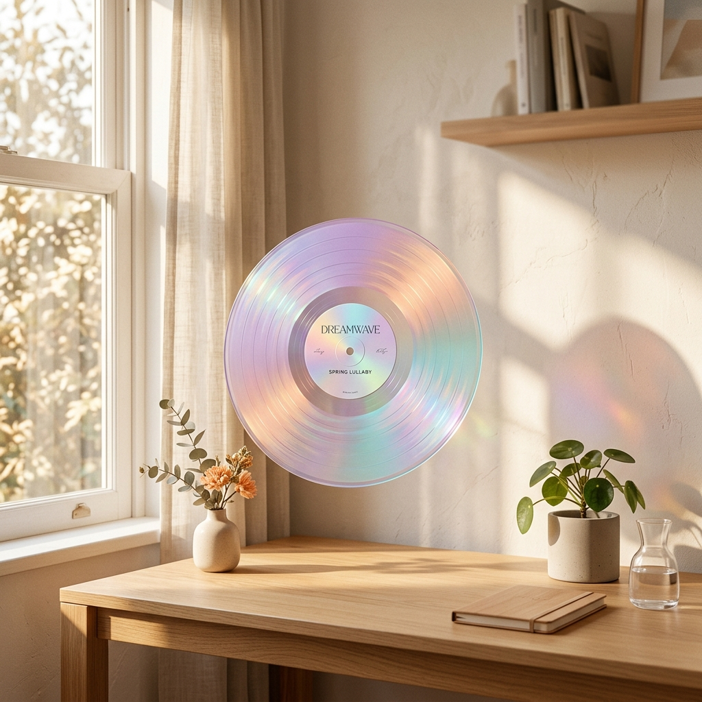

“Sábado de primavera, sol entrando por la ventana, manos en el teclado y la mente en modo creativo. 'Desire, I Want To Turn Into You' entra como una capa de color más en tu proceso... No es música para escuchar — es música para trabajar adentro de ella.”
— Copiloto Curatorial Spinstack
🎧
¿Por qué este disco?
Criterio de Curaduría
Combina texturas luminosas de sintetizador con melodías que acompañan sin saturar la mente. Otorga un pulso propulsor constante que evita la fatiga cognitiva de diseño, complementado por el ritual táctil de manipular un vinilo coloreado.
Análisis de Diseño
Principales Hallazgos del Asistente
1
Curaduría Afectiva y Ritual Físico
Experiencia de Usuario
El asistente no se limitó a sugerir tracks: entendió el contexto humano (primavera, luz solar, diseño en pantalla) y sincronizó la cualidad tangible del vinilo de color como una pausa ritual que predispone al flujo creativo.
Insight: La IA curatorial agrega valor cuando conecta el espacio físico y el estado mental, no solo el algoritmo musical.
2
Honestidad de Datos vs. Alucinación
Arquitectura del Agente
Al solicitarle calcular discos del "mismo género", el inventario carecía de esa columna. En lugar de inventar categorías arbitrarias, el asistente transparentó la restricción y contabilizó estrictamente por artista verificado.
Límite de Arquitectura Cumplido
"Tu inventario no tiene columna de género, así que no puedo calcular 'discos del mismo género' sin inventar una categorización no verificada."
3
Traducción Multimodal Cruzada
Dirección de Arte con IA
Capacidad de traducir sensaciones acústicas y climáticas en un prompt gráfico evocador (luz dorada de primavera, vinilo iridiscente flotante, paleta pastel holográfica y grano analógico) aplicable a Midjourney o DALL-E.
El modelo fue capaz de empaquetar recomendación, justificación, prompt, estadísticas duras de inventario y recomendaciones similares en una ficha de diseño lista para exportar como PDF estructurado.
Formato Ficha: Estructura minimalista tipo magazine con jerarquía tipográfica limpia.
Dirección de Arte
Portada Conceptual Generada

1:1 Square · Grano Analógico
PROMPT VISUAL RECOMENDADO
Dreamy afternoon studio scene, soft golden spring sunlight streaming through a window onto a desk, translucent iridescent color-gradient vinyl record floating mid-air, holographic pastel color palette (lilac, peach, aqua), liquid glass textures, surreal minimalist composition, warm analog film grain, editorial album cover aesthetic, soft bokeh, feminine dreamlike atmosphere, 1:1 square format.
Lilac#D6CBF8
Peach#FDD1BF
Aqua#BBECE3
Sunlight#F8E5B8
Dato Verificado de Inventario
Colección de Caroline Polachek
4discos en tu inventario
Conteo verificado directamente del archivo sin columna de género.
PangDesire I Want To Turn Into You ★Standing At The Gate: RemixArcadia